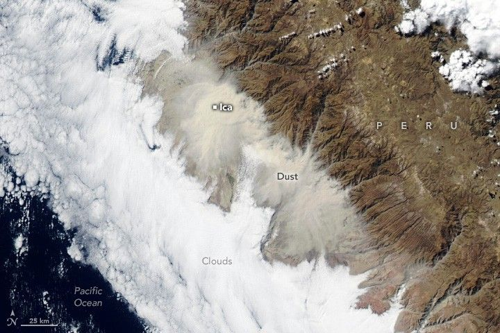

Dust Engulfs Coastal Peru
Winds whipped across the coast of central and southern Peru on July 31, 2025, lofting dust and sand particles into the air. Giant plumes of the particles blew inland, turning skies orange, reducing visibility, and degrading air quality.
The MODIS (Moderate Resolution Imaging Spectroradiometer) on NASA’s Aqua satellite captured this image at about 3 p.m. Peru Time (PET) on July 31. The dust engulfed several urban areas, including Ica, a city in the coastal desert of central Peru located about 300 kilometers (190 miles) south of Lima.
Winds in Ica that day reached nearly 40 kilometers (25 miles) per hour, according to Senamhi, Peru’s national meteorological service. High winds and dust plumes also affected several coastal areas south of this scene, including Tacna, near the border with Chile.
The winds, known locally as Paracas winds, occur several times each year, typically during the afternoon toward the end of the austral winter. They are usually associated with the strengthening of anticyclonic conditions. In this case, an unusually strong South Pacific high-pressure system collided with a low-pressure system, producing strong downdrafts that stirred up the dust, according to news reports.
“The impact is local because the dust is being pushed against the Andes,” said Santiago Gassó, an atmospheric scientist at the University of Maryland. “The mountains are so high that the dust cannot go beyond, thus preventing long-range transport over the rest of the continent.”
The same scene is shown alongside another satellite image acquired 70 minutes earlier. At that time, the dust covered a smaller area closer to shore, and the city of Ica remained visible.
Gassó also noted that Aqua now observes locations on Earth later in the afternoon than it did several years ago. Due to fuel limitations, the 23-year-old satellite is slowly drifting to later equatorial crossing times and lower altitudes. As a result, Aqua now captures phenomena it might not have otherwise observed, including Peru’s late-afternoon dust storm.
The image above pairs the Aqua image (right) with an image acquired earlier that day (left) by the VIIRS (Visible Infrared Imaging Radiometer Suite) on the NOAA-20 satellite, highlighting how rapidly the dust spread inland.